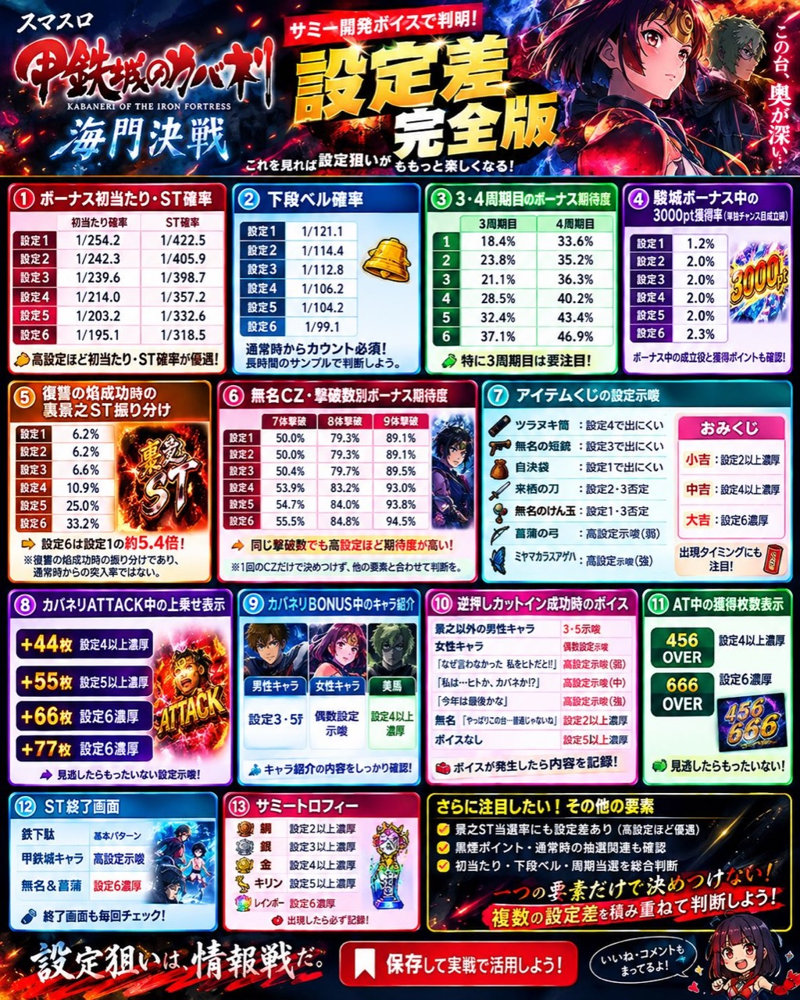
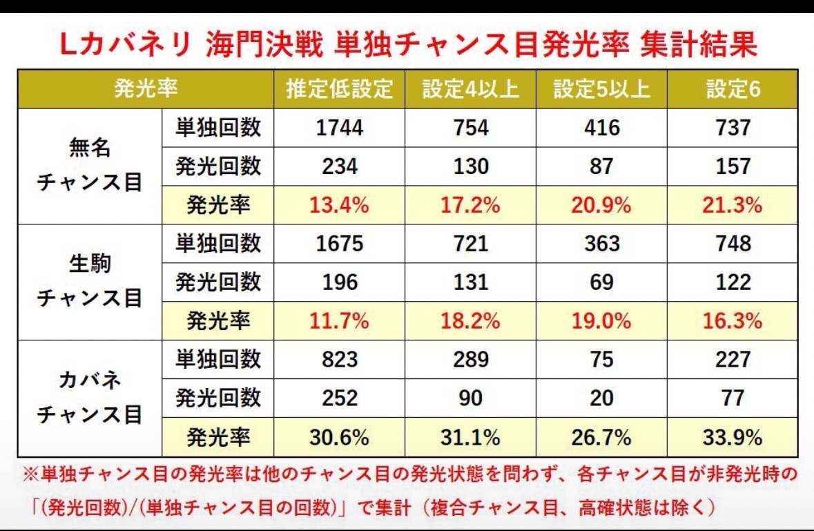

KABANERI OF THE IRON FORTRESS
設定差を、記録して重ねる。
出現した示唆をチェックし、単独チャンス目の実測率を画像の集計値と照合。遊技中のメモに使える判別ページです。
1
出現した設定示唆
チェックで判定更新写真1にある示唆を記録します。最も強い示唆とチェック項目を表示します。
2
主な数値の設定差
写真1の掲載値初当たり、ST、下段ベル、周期やボーナス関連の数値を設定ごとに並べました。数値だけでの設定確定には使えません。
| 項目 | 設定1 | 設定2 | 設定3 | 設定4 | 設定5 | 設定6 |
|---|---|---|---|---|---|---|
| ボーナス初当たり | 1/254.2 | 1/242.3 | 1/239.6 | 1/214.0 | 1/203.2 | 1/195.1 |
| ST確率 | 1/422.5 | 1/405.9 | 1/398.7 | 1/357.2 | 1/332.6 | 1/318.5 |
| 下段ベル確率 | 1/121.1 | 1/114.4 | 1/112.8 | 1/106.2 | 1/104.2 | 1/99.1 |
| 3周期目ボーナス期待度 | 18.4% | 23.8% | 21.1% | 28.5% | 32.4% | 37.1% |
| 4周期目ボーナス期待度 | 33.6% | 35.2% | 36.3% | 40.2% | 43.4% | 46.9% |
| 駿城ボーナス中 3000pt獲得率 | 1.2% | 2.0% | 2.0% | 2.0% | 2.0% | 2.3% |
| 復讐の焔成功時 裏景之ST振り分け | 6.2% | 6.2% | 6.6% | 10.9% | 25.0% | 33.2% |
| 無名CZ 7択撃破時 ボーナス期待度 | 50.0% | 50.0% | 50.4% | 53.9% | 54.7% | 55.5% |
| 無名CZ 8択撃破時 ボーナス期待度 | 79.3% | 79.3% | 79.7% | 83.2% | 84.0% | 84.8% |
| 無名CZ 9択撃破時 ボーナス期待度 | 89.1% | 89.1% | 89.5% | 93.0% | 93.8% | 94.5% |
下段ベル等の分母や集計条件は実戦上の記録方法と合わせてください。詳細条件は写真1を参照。
3
単独チャンス目 発光率
自分の実測と比較回数と発光回数を入れると実測率を計算します。写真2の集計値を目安として並べます。
実測率：—
実測率：—
実測率：—
| チャンス目 | 推定低設定 | 設定4以上 | 設定5以上 | 設定6 |
|---|---|---|---|---|
| 無名 | 13.4% (234/1744) | 17.2% (130/754) | 20.9% (87/416) | 21.3% (157/737) |
| 生駒 | 11.7% (196/1675) | 18.2% (131/721) | 19.0% (69/363) | 16.3% (122/748) |
| カバネ | 30.6% (252/823) | 31.1% (90/289) | 26.7% (20/75) | 33.9% (77/227) |
写真2の注記：他のチャンス目の発光状態を問わず、各チャンス目が非発光時の「発光回数 ÷ 単独チャンス目の回数」で集計（複合チャンス目・高確状態は除く）。集計値との比較であり、設定の確率判定ではありません。
4
判別要素の原資料
添付画像をページ内に同梱しています。細かな条件や表記を原画像で確認できます。

